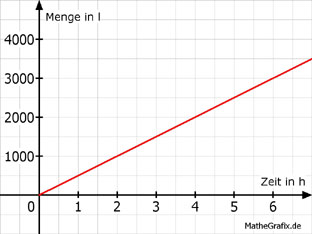

Lineare Funktionen Aufgabe 42 Eine Pumpe, die 500 l Wasser pro Stunde liefert, versorgt ein Gemüsefeld. a) Tragen Sie die fehlenden Werte für die Wasser- menge M in l abhängig von der Zeit t in h ein. b) Wie viel l fördert die Pumpe in 5 h? c) Wie viel h braucht die Pumpe, um 3 200 l zu fördern? a) Die Funktionsgleichung für die Abhängigkeit der Wassermenge M von der Zeit t lautet: M = 500 * t t 1 4 M 500 2000 M(1) = 500 * 1 = 500 M(4) = 500 * 4 = 2000  b) t = 5 h M(5) = 500 * 5 = 2 500 l c) M = 3 200 3200 = 500 * t | :500 t = 6,4 h